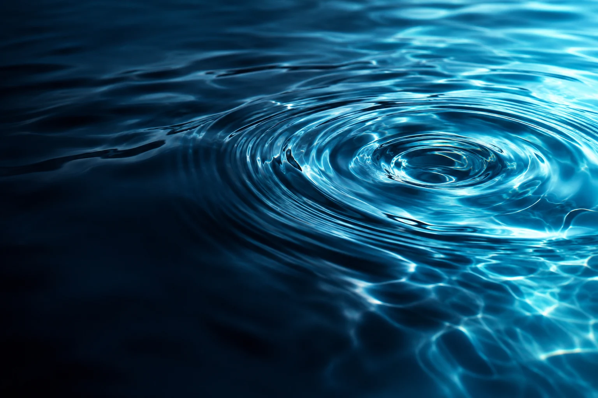

Homes & apartments
Explore non-potable reuse for toilet flushing, cleaning and suitable landscaping, subject to treatment validation and local requirements.
Urban resilience
Water recovery / Student engineering
Recover energy from its movement.
Reimagine where it goes next.
AquaSpin explores a simple question: could the water leaving a sink help power its own treatment?
The concept combines micro-turbine energy recovery with filtration and UV treatment, aiming to make greywater useful again for non-drinking applications.
See the design targets ↗Select a stage to explore the proposed flow.
Collect greywater from suitable bathroom and sink sources. The design aims to fit a compact recovery stage into the water’s path.
A micro-turbine drives a generator. The proposed peak targets are 2,600 RPM and 4.5 W; actual output depends on available flow, pressure and system losses.
The concept pairs filtration with 265 nm UV-C LEDs. Energy balance and treatment effectiveness still require validation under real greywater conditions.
Explore non-potable reuse for toilet flushing, cleaning and suitable landscaping, subject to treatment validation and local requirements.
Urban resilienceBring water conservation and energy recovery into one tangible engineering project, designed around everyday water use.
Learning through engineeringStudy reduced reliance on external electricity for water reuse. Clinical or sterile-water applications are not established.
Energy independence, exploredFigures carried forward from the project concept. These are targets, not independently verified performance results.
| Parameter | Concept target |
|---|---|
| Operating flow | 1.5–8.0 L/min |
| Peak generator output | 4.5 W |
| External power demand | 0 W goal |
| Microbial reduction | 99.9% target |
| LED operating life | ~15,000 hours target |
Reuse is intended to be non-potable. No drinking-water or sterile-water claim is made.
A student innovator exploring resource recovery and practical hardware. AquaSpin began with the idea that waste could become a starting point.
The next step is to turn the concept into measured, repeatable evidence.
Build the next iteration
Have a question, research insight or collaboration idea? Get in touch.